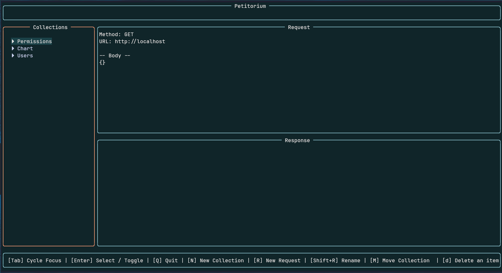

Terminal API Testing Client
Test APIs directly from your terminal with collections, environments, and extensible plugins
Terminal Interface

Modern terminal-based API testing with collections, environments, and plugins
Features
Request Collections
Organize and manage your API requests in hierarchical collections
Environment Variables
Manage different environments with variable substitution
Plugin System
Extend functionality with custom plugins for auth, logging, and transformations
Terminal UI
Modern terminal interface built with Go and tview
Available Plugins
Auth Injector
Automatically inject authentication headers into requests
SecurityResponse Transformer
Modify and transform HTTP responses before display
UtilityRequest Logger
Log all HTTP requests and responses for debugging
Debugging